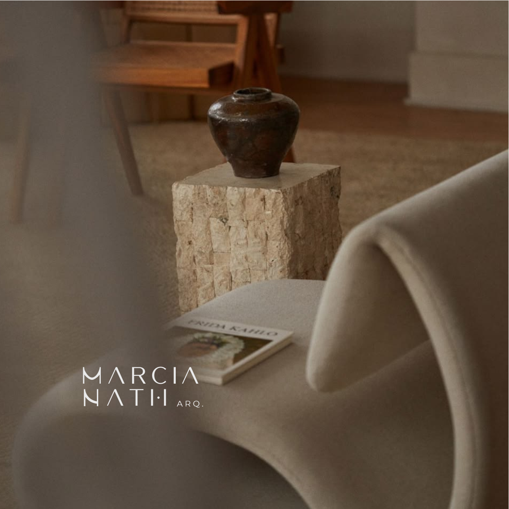

Projeto residencial
Estudo de layout, fluxos, volumetria, acabamentos e diretrizes para casas e apartamentos.

O que guia o trabalho

Sobre o estudio
O estudio desenvolve projetos para pessoas que querem morar melhor sem abrir mao de personalidade. Cada decisao parte da rotina, do terreno, da luz, dos materiais e da sensacao que o ambiente precisa provocar.
Ver servicosExclusivamente para voce
A proposta e criar ambientes sofisticados, mas possiveis de viver: circulacao bem resolvida, materiais coerentes, iluminacao pensada e escolhas que envelhecem bem.
Estudo de layout, fluxos, volumetria, acabamentos e diretrizes para casas e apartamentos.
Composicao de ambientes, mobiliario, iluminacao, revestimentos e paleta de materiais.
Apoio nas escolhas e alinhamento das etapas para manter a intencao do projeto ate a execucao.
Como acontece
Entendimento da rotina, prioridades, referencias e limites do projeto.
Definicao da linguagem, distribuicao dos ambientes e atmosfera desejada.
Materiais, iluminacao, mobiliario e orientacoes para uma execucao consistente.